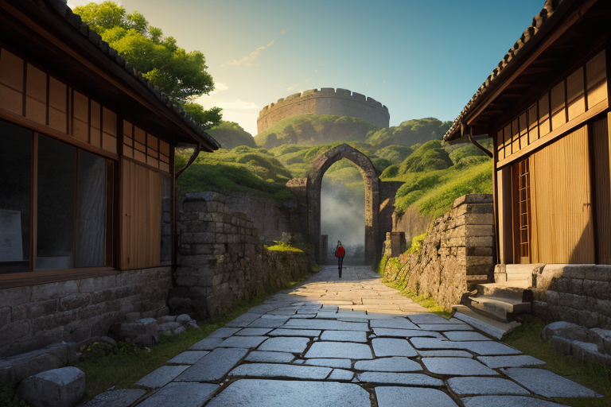
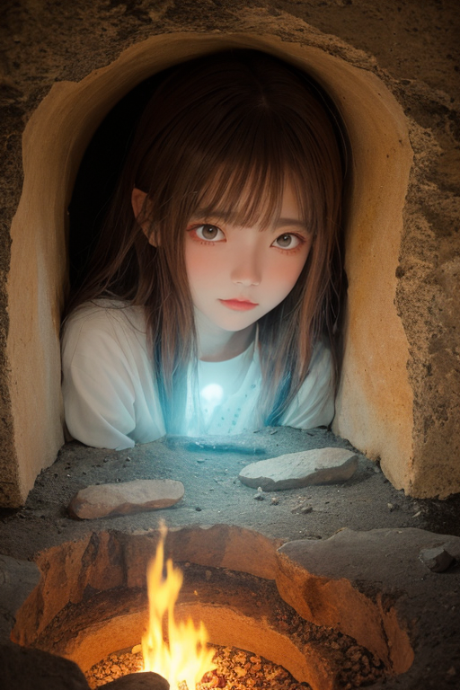
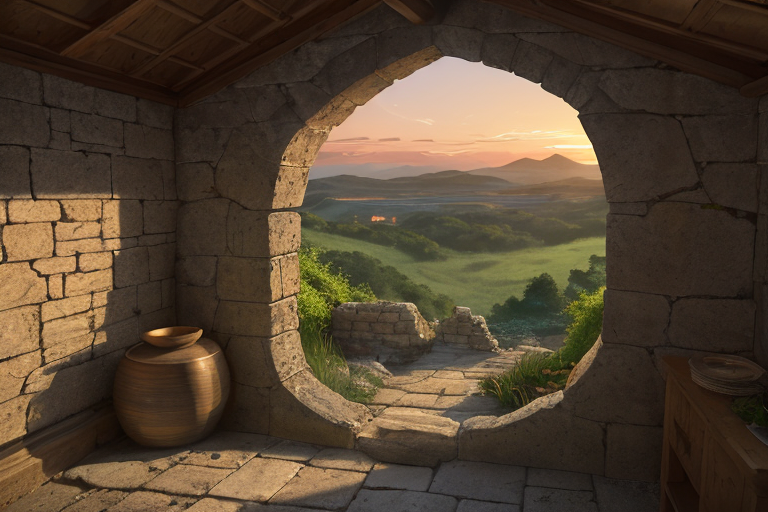
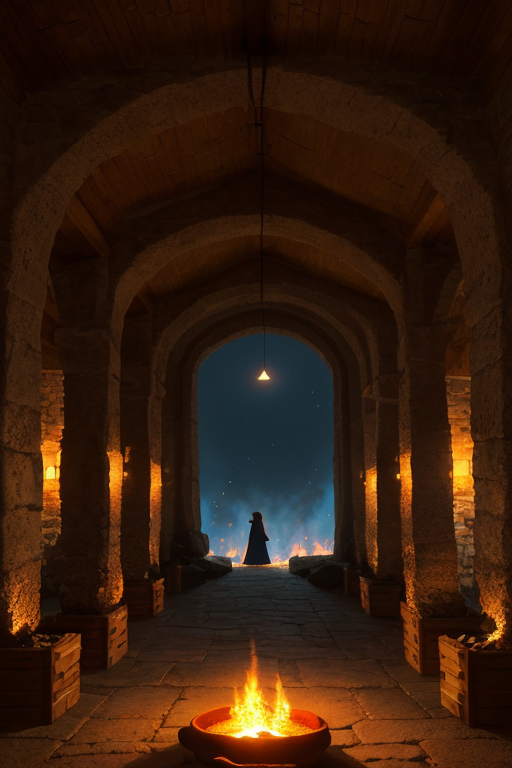
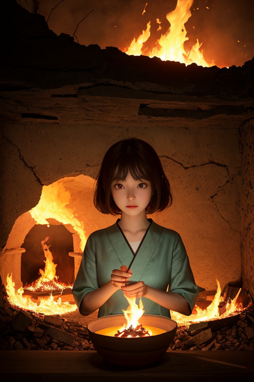

第一章 現実の佐賀
あなたはまだ気づいていない。この土地にも、王がいることを。
有田陶磁の里の坂道は、朝露に濡れていた。窯元から漂う微かな土の匂い。四百年、この地で火は絶えることなく燃え続けてきた。その歴史の重みは、通り過ぎる観光客の足音には聞こえない、地層の深い唸りのようなものだ。吉野ヶ里遺跡の環濠に映る空は、弥生の昔と変わらぬ青さで、ただ静かに時を湛えている。
その静けさの底で、土地はゆっくりと歪んでいた。プレートの沈み込みが生む、目には見えない圧力。それは有田の陶土が窯の中で変容する時の、あの緊張に似ている。いつか来るべき「その時」のために、エネルギーは蓄えられていく。
路地裏の工房で、轆轤が回る音だけが響く。職人の指先に土が寄り添い、無から形が生まれる。その一瞬一瞬にも、土地の歪みは、ごくわずか、ほんのわずかに影響を与えようとする。誰も気づかぬうちに。ただ、すべてを調整する「何か」がここにいなければ、その影響はもっと確かな形で現れていただろう。

第二章 歪みの兆候
吉野ヶ里遺跡の環濠に、朝露が光る。弥生の水脈は今も地中を流れ、時折、現代の地盤に微かな軋みを生む。歴史の重みは、物理的な重さとしても存在するのだ。
サガリア・アンバーは、遺跡を見下ろす丘に立っていた。掌に浮かぶ琥珀色の紋章が、地中を伝わる古い「歪み」の波紋を捉える。それは有田の窯元で感じる、陶土が焼き締まる前の、かすかな震えと同質のものだった。時代の断層が、静かにずれ始めている。
「王」彼の傍らで、妖精アンベラが低く言った。彼女の陶土でできた指先が、紋章から立ち上る見えない熱をなぞる。「この波長は…『記憶の反芻』です。土地が、過去の転換点を思い出そうとしている」
王は答えず、目を閉じた。視界の裏側に、無数の光の糸が浮かぶ。佐賀の地図、その上を走る地脈、そして幾重にも積もった歴史の層。吉野ヶ里の集落が巨大化した弥生中期、有田で初めて磁器が焼かれた江戸初期…転換点のエネルギーが、地層の奥で共鳴を始めていた。それは破局ではない。しかし、放置すれば、確実に現在を揺さぶる「癖」となる。
彼は掌をかすかに握った。紋章の光が、ほんの一瞬、強く輝く。地中を伝わる共鳴を、そっと押し流すように。消すことはできない。ただ、その到来を、ほんの少しだけ遅らせる。静かな情熱は、こうして、目に見えぬ戦場で持続していた。

第三章 王の葛藤
吉野ヶ里遺跡の環濠に、夕陽が沈みかけていた。地層の共鳴は、変革のエネルギーを帯びていた。弥生時代の大集落形成、有田焼の技術革新…この地の歴史は、静かなる「火」の連続だ。今、その火が、地殻の歪みという形で再燃しようとしている。
妖精アンベラが、陶土でできた小さな板を差し出した。板には、歪みの「癖」が可視化されていた。放置すれば、唐津城の石垣に亀裂が走り、虹の松原の松が数本倒れる規模の揺れとなる。しかし、この「癖」を完全に消すには、地中に蓄積された歴史のエネルギーそのものを、強引に「鎮火」せねばならない。それは、この地の持続的な変革の力を、一時的にせよ封じ込めることに等しい。
サガリア・アンバーは、琥珀色の瞳を細めた。彼の内なる静火が、初めて激しく揺らぐ。調整者の使命は、現状の平穏を保つこと。だが、この地の本質は、陶土が炎で変容するように、静かな情熱による不断の変革そのものではないか。止めるべきか、あるいは、その到来をただ見守り、被害を最小限に「調整」するだけか。
彼は、そっと息を吐いた。掌の紋章は、消えかけた夕陽のように、穏やかな琥珀色を放っていた。

第四章 妖精との対話
有田陶磁の里の夜は、窯の残り火の匂いが漂う。王は、古い登り窯の前に佇んでいた。傍らで、主席妖精アンベラが、掌に微かな土の塊を載せて見せた。
「この陶土は、四百年、同じ場所で掘られ続けています。しかし、同じ土は一片もありません。表土が剥がれ、深く掘るごとに、わずかに性質が変わる。それに合わせて、釉薬も、焼き方も、絶えず調整されてきた。それが、『続く』ということです。」
彼女の声は、土を捏ねる音のように低く、確かだった。
「変革は、この地の本質です。王。それは、突然の大火ではなく、窯の中の静火のようなもの。急激な温度変化は割れを生みます。しかし、適切な熱と時間があれば、土はより強く、美しく焼き締まる。」
王は黙って聞いた。彼の内なる静火が、アンベラの言葉に共振する。
「我々の役目は、火圧を制御し、焼成の波を調整すること。変革そのものを止めるのではなく、その熱が、全てを灰にする前に、新たな形を生み出せるよう…微調整することでは？」
窓の外で、次の朝を待つ窯が、ほのかな熱気を放っていた。

第五章 微調整と余韻
有田陶磁の里の窯元で、一人の若き陶工が、生涯の傑作となる大皿の焼成に臨んでいた。その夜、予期せぬ地震が佐賀平野を揺るがす。窯の倒壊、作品の崩壊は不可避の未来として、世界線に刻まれようとしていた。
サガリア・アンバーは、吉野ヶ里遺跡の静寂の中に立っていた。彼の内なる静火が、今、最大の輝きを放とうとしている。歴史を一度だけ、ほんの少し曲げる。その代償は、彼自身の持続の炎を、百年分だけ減じることだ。
「許諾する」王の声は、静かだった。
アンベラが火圧を制御し、アリタナが焼成波を調整する。震源の歪みを、ほんの一瞬、別の方向へ逃がす。倒れるはずだった窯は大きく揺れながらも耐え、中の大皿は、ひび一つ入らずに朝を迎えた。
陶工は無事の作品に息を呑んだ。その皿は、後に「奇跡の焼き物」と呼ばれ、有田焼の新たな時代を切り開く礎となる。
虹の松原に佇む王の姿は、以前より少し、透明に近づいていた。静火は弱まったが、消えはしない。彼は、陶土が窯の中で新たな強さを得るように、この土地の情熱が形を変えながら続くのを見守る。
あなたの町にも、王がいる。